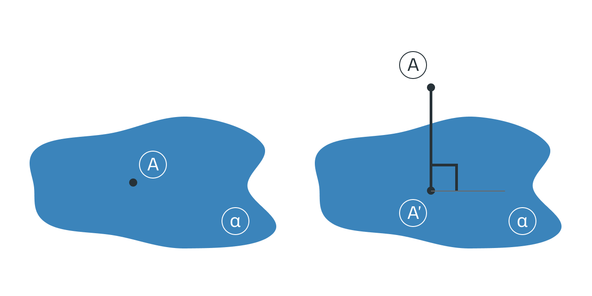
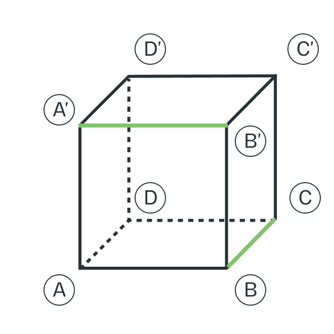
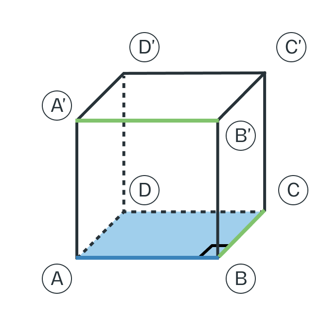
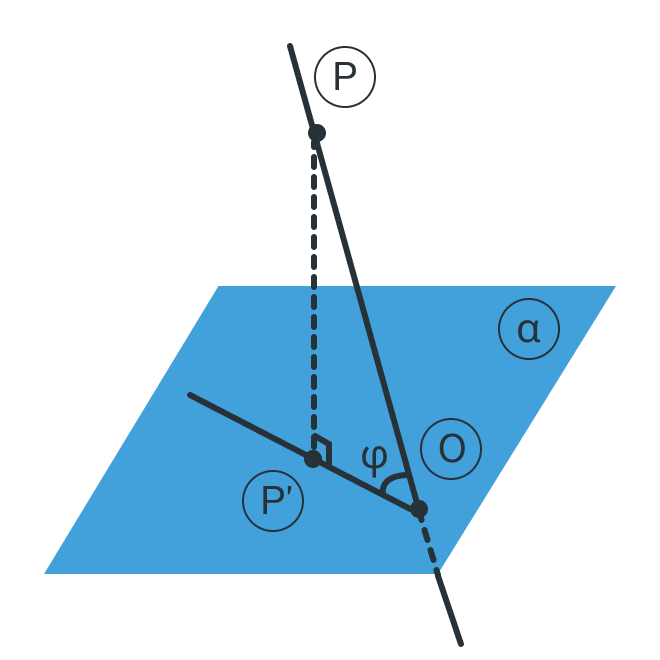
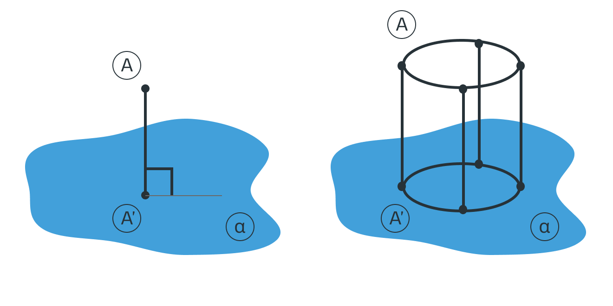

Стереометрия - часть 3. Взаимное расположение точек, прямых, плоскостей.
Эта статья является частью цикла статей о стереометрии
Ссылки на другие части:
- Стереометрия - часть 1. Аксиомы стереометрии;
- Стереометрия - часть 2. Величины геометрических тел;
- Вы здесь;
- Comming soon
Введение
Взаимное расположение объектов друг относительно друга в стереометрии можно свести к нескольким описательным характеристикам: есть ли пересечение, какие углы при пересечении или какое расстояние между непересекающимися объектами.
Чтобы не превращать эту статью в пересказ теорем (которых в том же справочнике страниц на 8 по этой тематике), зададимся конечной практической целью — научиться находить угол между прямой и плоскостью.
Как гласит название сервиса такси в городе Абакан, «Поехали!»
Точки
С точками в стереометрии всё не сложнее, чем в планиметрии: точки либо совпадают друг с другом, либо нет. Всё.
Точки могут как лежать на прямой, так и не лежать, то есть находиться от неё на ненулевой расстоянии. Напомню, расстояние от точки до прямой — длина перпендикуляра, опущенного из этой точки, на прямую. Довольно конструктивное определение.
Аналогично дело обстоит с плоскостями: точка или лежит в плоскости или не лежит. Продолжаем аналогию: расстояние от точки до плоскости — длина перпендикуляра, опущенного из этой точки, на плоскость.
Что такое перпендикуляр к плоскости мы поговорим ниже, а вот как найти его длину — в отдельной статье о расстояниях в стереометрии.
Прямые
Переходим к более сложным фигурам — прямым. Прямые между собой могут:
- Пересекаться — иметь общую точку;
- Быть параллельными — лежать в одной плоскости и при этом не иметь общих точек;
- Скрещиваться — не иметь общих точек, и не являться параллельными.
То есть в результате появления третьего измерения у нас добавился один вариант взаимного расположения. Более короткое определение: две прямые скрещиваются, если не существует плоскости, их содержащей. Например, эти ребра в кубе являются скрещивающимися, так как нельзя подобрать ни одной грани куба, в которой бы они оба лежали.
Разумеется есть еще частный вариант пересечения плоскости и прямой — перпендикулярность. О ней мы поговорим позже.
Углы между прямыми в стереометрии
Из курса планиметрии мы знаем, что прямые могут пересекаться под различными углами. Напомню, что углом между двумя пересекающимися прямыми называется величина наименьшего плоского угла при пересечении данных прямых. Если две прямые параллельны, то угол между ними — ноль градусов.
А что делать со скрещивающимися? Угол между скрещивающимися прямыми — это угол между двумя пересекающимися прямыми, которые соответственно параллельны заданным скрещивающимся прямым.
Возьмем тот же пример с ребрами куба. Подберем параллельную прямую AB так, чтобы две прямые AB и BC лежали в плоскости одной грани (нижней). И становится очевидно, что угол между ними — прямой.
Плоскости
Плоскости в трехмерном евклидовом пространстве могут:
- Пересекаться;
- Не пересекаться (быть параллельными).
Параллельные плоскости — это плоскости не имеющие общих точек. Определение, которым тяжело пользоваться в задачах. В будущем мы рассмотрим теоремы-признаки, которыми будет пользоваться удобнее.
Углы между прямыми и плоскостями
Углом между наклонной к плоскости (прямая PO) и плоскостью называют угол между этой наклонной и ее проекцией на плоскость (прямая P’O). Для понимания определения напишу небольшое отступление.
Проекция
В курсе школьной геометрии принято рассматривать всего один вид проекций — ортогональную. Если это не приводит к разночтениям, для упрощения формулировок термин «ортогональная проекция на плоскость» я буду сокращать до термина «проекция на плоскость».
Проекция точки на плоскость — основание перпендикуляра, опущенного из этой точки на плоскость. То есть проекция точки — это точка.
Проекцией фигуры a на плоскость α называют фигуру a’, образованную проекциями всех точек фигуры a на плоскость α. Если переходить к частному: прямая — это фигура, а значит, согласно определению, мы можем легко построить её проекцию. Для неё будет достаточно в общем случае построить проекцию двух несовпадающий точек прямой и объединить их прямой, получив тем самым проекцию изначальной прямой.
Вернемся к тому, на чем остановились. Все возможные случаи, возникающие при определении понятия угла между прямой и плоскостью, представлены в следующих иллюстрациях:
- параллельная плоскости прямая (нет точек пересечения);
- наклонная к плоскости (одна точка пересечения);
- перпендикуляр к плоскости (одна точка пересечения и прямой угол);
- лежащая в плоскости прямая (для признака — хотя бы две точки пересечения).
Если прямая параллельна плоскости или лежит в ней, то угол между прямой и плоскостью считается равным нулю.